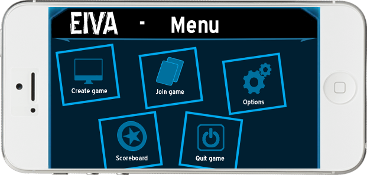
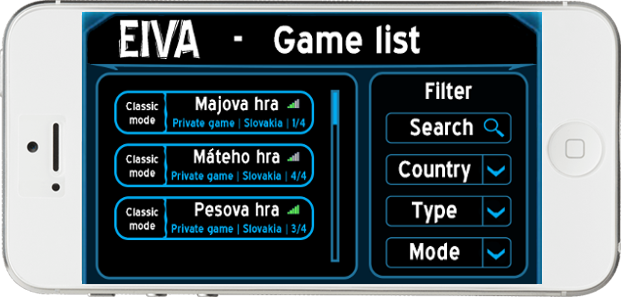
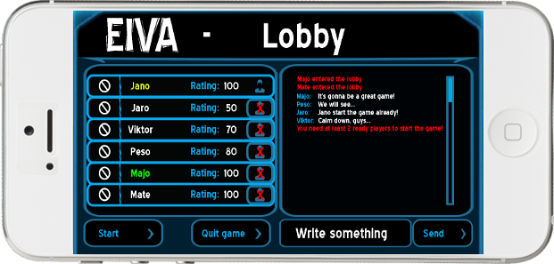
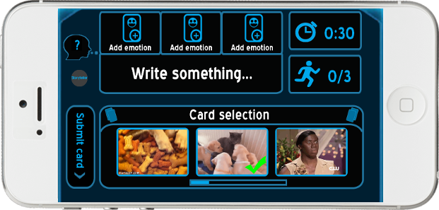
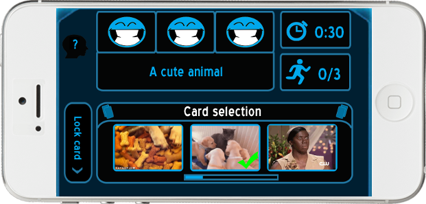
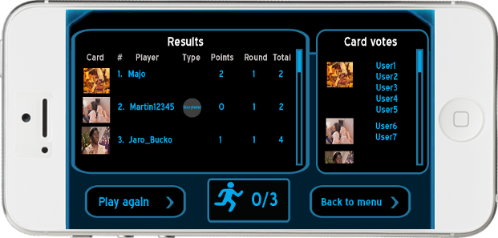

Eiva
Pre našu hru sme vybrali názov EIVA, čo je skratka od Efficient Interactive Video Anotation. Toto spojenie vystihuje jej celkový zámer.
Koncept
Eiva je postavená na princípe úspešnej spoločenskej hry Dixit ocenenej titulom Hra roka 2010 v Nemecku. V tejto hre sa používajú ako karty rôznorodé obrázky, no my narozdiel od nej používame videá, resp. krátke animácie, záskané z populárnych portálov ako napr. 9GAG.
Cieľ
Hlavným účelom hry Eiva je zabaviť hráčov, ale tiež chceme aby z nej bol úžitok a kreativitu používateľov chceme využiť na získanie užitočných dát.
Ukážka hry
-

Menu hry.
-

Zoznam herných miestností.
-

Lobby.
-

Výber videa a indície rozprávačom.
-

Výber videa hráčom na základe indície.
-

Hádanie videa vybraného rozprávačom na základe indície.
-

Zobrazenie videí, hlasov a výsledkov.
O nás
Ing. Jakub Šimko, PhD.
vedúci práce
Bc. Viktor Maruna
vedúci tímuBc. Peter Jurkovič
zástupca vedúceho tímuBc. Ján Kebísek
manažér vývojaBc. Marián Kuruc
hlavný architektBc. Jaroslav Bucko
manažér kvalityBc. Matej Čársky
manažér dokumentácieBc. Máté Vangel
manažér podporných prostriedkovPlán riešenia projektu
Letný semester
9. šprint (Dominika)
oprava chýb, testovanie, príprava na IIT.SRC 2014
8. šprint (Daniela)
analýza metadát, Facebook integrácia, riešenie kompatibility na rôznych zariadeniach, príprava na IIT.SRC 2014
7. šprint (Jana)
štatistiky v hre, achievmenty v hre, redesign GUI, dotazníky a prieskum ohľadne MEME, pridanie animácií z 9GAG, príprava na IIT.SRC 2014
6. šprint (Karolína)
časovanie v hre, chat v lobby, redesign GUI
Zimný semester
1. šprint (Ellie)
výber konceptu hry, vytvorenie webovej stránky, výber technológií
2. šprint (Kattie)
vytvorenie celkového návrhu projektu, začiatok implementovania hry (registrácia a prihlasovanie, herné lobby)
3. šprint (Annie)
príprava animácií, začiatok implementácie jedného kola hry
4. šprint (Ildikó)
dokončenie prechodu celým kolom hry, vytvorenie viackolových hier
5. šprint (Oľga)
dokončenie rozrobených úloh, oprava chýb, testovanie a vytvorenie funkčnej verzie
Kontakt
V prípade potreby nás zastihnete na:

Slovenská technická univerzita v Bratislave
Fakulta informatiky a informačných technológií
Ilkovičova 2
842 16 Bratislava 4
Email: timovy-projekt-14-2013-2014@googlegroups.com
Design W3layouts modified by Gwappers 2014.